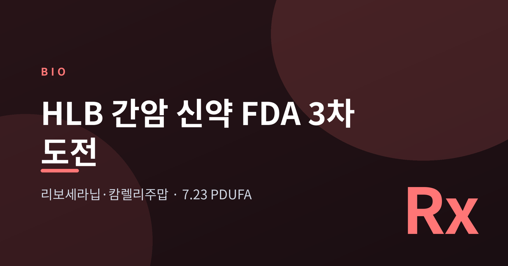
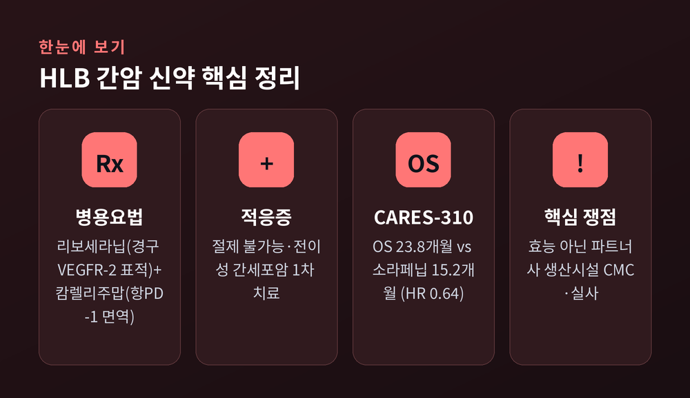
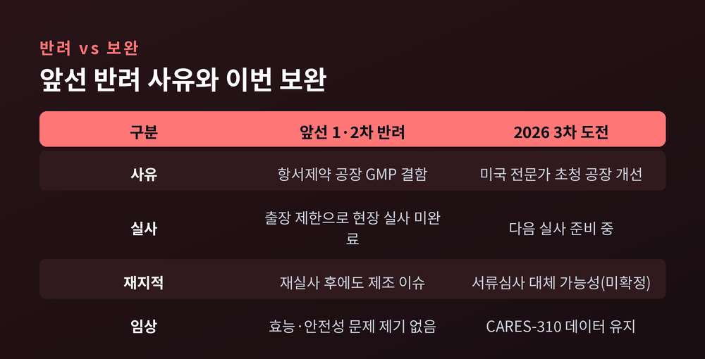
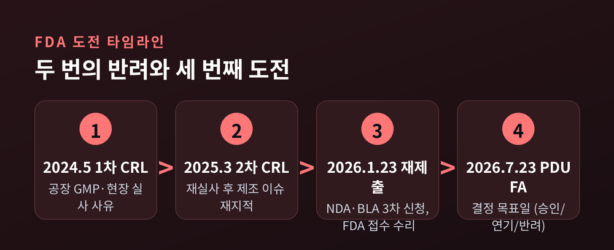

[바이오] HLB 간암 신약 리보세라닙, FDA 3차 도전과 7월 23일 PDUFA

오늘은 HLB의 간암 신약 리보세라닙·캄렐리주맙 병용요법이 맞이한 FDA 3차 도전을 정리해 보겠습니다. 두 번의 반려를 지나, 2026년 7월 23일 심사 결정 목표일을 앞둔 상황입니다. 무엇이 쟁점이었고 이번엔 무엇이 달라졌는지, 사실 위주로 짚어 보겠습니다.
먼저 핵심부터 — 지금 어디까지 왔나
리보세라닙·캄렐리주맙 병용요법은 절제 불가능·전이성 간세포암(HCC)의 1차 치료제 후보입니다. 미국 자회사 엘레바 테라퓨틱스가 리보세라닙 NDA를, 중국 항서제약이 캄렐리주맙 BLA를 2026년 1월 23일 재제출했습니다. FDA는 이를 접수 수리했고, 심사 결정 목표일인 PDUFA를 2026년 7월 23일로 부여했습니다.
이번이 세 번째 신청입니다. 앞서 2024년 5월과 2025년 3월, FDA는 두 차례 보완요구서(CRL)를 보냈습니다. 중요한 점은 두 번 모두 약의 효능이나 안전성 문제가 아니었다는 데 있습니다.
어떤 약인가 — 표적치료제와 면역항암제의 병용
리보세라닙은 HLB가 개발한 경구용 VEGFR-2 표적 항암제입니다. 종양이 새 혈관을 만드는 과정을 차단해 성장을 억제하는 방식으로 알려져 있습니다. 캄렐리주맙은 중국 항서제약이 개발한 항PD-1 면역항암제로, 억제됐던 면역세포를 다시 활성화하는 역할을 합니다.
설계의 논리는 시너지입니다. 리보세라닙이 종양 주변 환경을 면역이 잘 작동하는 상태로 바꾸고, 그 위에서 캄렐리주맙이 면역세포를 깨운다는 구상입니다.
근거가 된 임상은 글로벌 3상 CARES-310입니다. 보고된 전체생존기간(OS) 중앙값은 병용군 23.8개월, 대조군 소라페닙 15.2개월(위험비 0.64)이었습니다. 무진행생존기간(PFS)은 병용군 5.6개월 대 3.7개월(위험비 0.54)로 발표됐습니다. 최종 분석은 국제 학술지 란셋·란셋 온콜로지에 게재됐습니다.
다만 이 수치는 임상시험에서 보고된 결과값입니다. 실제 효과와 안전성은 개별 환자에 따라 다를 수 있으며, 의학적 판단은 의료진의 몫이라는 점을 분명히 해 둡니다.

두 번의 반려, 사유는 효능이 아니었다
FDA가 보낸 두 차례 CRL의 본질은 같았습니다. 임상 데이터가 아니라 제조·품질관리(CMC)와 현장 실사 영역의 문제였습니다.
1차 반려는 2024년 5월이었습니다. 캄렐리주맙을 생산하는 항서제약 공장의 GMP 결함, 그리고 출장 제한으로 인한 임상 현장 실사 미완료가 사유였습니다. 리보세라닙 자체의 임상 데이터나 생산시설에 대해서는 문제가 제기되지 않았습니다.
2차 반려는 2025년 3월이었습니다. FDA는 2025년 1월 항서제약 공장을 재실사했고, 회사 측은 1차 지적 사항이 모두 해소됐다고 밝혔습니다. 그럼에도 FDA는 다시 제조 관련 이슈를 제기했습니다. 다만 구체적 사유는 명시하지 않은 것으로 보도됐습니다.
회사 측은 2차 반려가 병용요법의 효능·안전성이나 리보세라닙 제조공정에는 어떤 우려도 제기하지 않았다고 강조했습니다. 결국 핵심 병목은 HLB 자신이 아니라, 파트너인 항서제약의 캄렐리주맙 생산시설 품질관리에 있었던 셈입니다.

2026년 세 번째 도전 — 남은 관건
이번 재도전에서 가장 큰 관건은 여전히 생산시설 실사입니다. 보도에 따르면 회사는 미국 전문가를 초청해 항서제약 공장 개선 작업을 진행하고, 다음 실사를 준비하고 있습니다.
이 대목에서는 보도가 엇갈립니다. 한쪽에서는 FDA가 추가 현장 실사 없이 항서제약이 제출한 서류로 심사를 종결할 가능성을 제기합니다. 다른 한쪽에서는 생산시설 실사가 여전히 핵심 쟁점이며 다음 실사를 준비 중이라고 전합니다. 현 시점에서 현장 실사 실시 여부는 확정되지 않았습니다.
일정을 받아들이는 자세도 신중할 필요가 있습니다. PDUFA 7월 23일은 그날 반드시 승인된다는 뜻이 아니라, FDA가 결정을 내릴 목표일입니다. 승인도, 연기도, 세 번째 반려도 모두 열려 있는 날입니다.

시장과 더 큰 흐름 속에서
승인을 받더라도 시장은 만만치 않습니다. 현재 진행성 간세포암 1차 치료의 표준은 티쎈트릭·아바스틴 병용이며, 임핀지·이뮤도 병용도 자리를 잡았습니다. 리보세라닙·캄렐리주맙이 승인된다면 경구 표적치료제 기반의 새 옵션으로 이 시장에 진입하게 됩니다.
큰 흐름에서 보면 이 도전은 K-바이오의 FDA 직접 상업화 행보 위에 있습니다. 앞서 유한양행 렉라자가 2024년 8월 국내 첫 항암 신약으로 FDA 관문을 통과한 사례가 있습니다. HLB 사례가 거듭 보여주는 교훈은 분명합니다. 임상 데이터가 좋아도, 생산시설 품질관리와 현장 실사라는 비임상 관문에서 막힐 수 있다는 점입니다.
물론 한계도 솔직히 적어 둡니다. 핵심 리스크는 HLB가 직접 통제하기 어려운 파트너사의 생산시설 영역에 있습니다. 두 차례 반려와 긴 지연을 두고 시장의 신뢰를 묻는 보도가 있었던 것도 사실입니다.
정리하면 이렇습니다. 이번 도전의 승패는 약의 효능이 아니라, 효능 바깥의 관문에서 갈릴 가능성이 큽니다.
"좋은 데이터도, 공장 문을 통과하지 못하면 환자에게 닿지 못한다."
7월의 결정이 어떤 방향으로 나든, 그 과정 자체가 한국 바이오의 다음 도전에 적지 않은 기록을 남길 것입니다.
본 글은 정보 제공을 위한 것이며, 투자나 의학적 판단의 근거가 아닙니다.